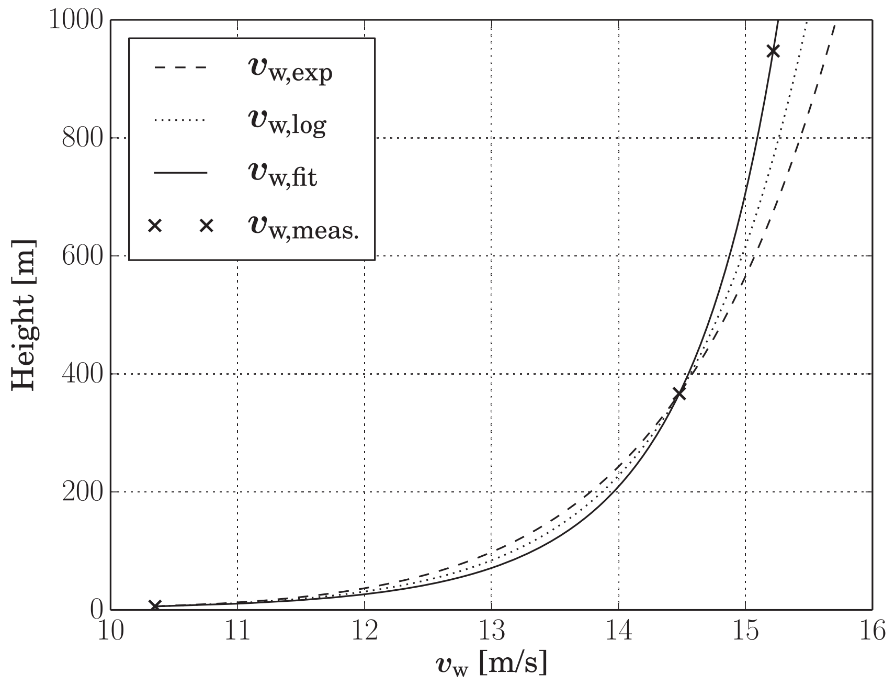

AtmosphericModels
This package provides functions for modelling the influence of the atmosphere on wind energy systems. It models the air density, the vertical wind profile and the wind turbulence. Further functions to import measured data are planned.
Installation
Install Julia 1.10 or later, if you haven't already. You can add AtmosphericModels from Julia's package manager, by typing
using Pkg
pkg"add AtmosphericModels"at the Julia prompt.
Running the tests
Launch Julia using this project and run the tests:
julia --project
using Pkg
Pkg.test("AtmosphericModels")Running the examples
If you check out the project using git, you can more easily run the examples:
git clone https://github.com/OpenSourceAWE/AtmosphericModels.jl
cd AtmosphericModels.jlLaunch Julia using this project and run the example menu:
julia --project
include("examples/menu.jl")The first time will take some time, because the graphic libraries will get installed, the second time it is fast.
Usage
Calculate the height dependant wind speed
using AtmosphericModels
am = AtmosphericModel()
const profile_law = Int(EXPLOG)
height = 100.0
wf = calc_wind_factor(am, height, profile_law)The result is the factor with which the ground wind speed needs to be multiplied to get the wind speed at the given height.

The EXPLOG profile law is the fitted linear combination of the exponential and the log law.
Using the turbulent wind field
You can get a wind vector as function of x,y,z and time using the following code:
using AtmosphericModels, KiteUtils
set_data_path("data")
set = load_settings("system.yaml"; relax=true)
am::AtmosphericModel = AtmosphericModel(set)
@info "Ground wind speed: $(am.set.v_wind) m/s"
wf::WindField = WindField(am, am.set.v_wind)
x, y, z = 20.0, 0.0, 200.0
t = 0.0
vx, vy, vz = get_wind(wf, am, x, y, z, t)
@time get_wind(am, x, y, z, t)
@info "Wind at x=$(x), y=$(y), z=$(z), t=$(t): v_x=$(vx), v_y=$(vy), v_z=$(vz)"
@info "Wind speed: $(sqrt(vx^2 + vy^2 + vz^2)) m/s"It is suggested to check out the code using git before executing this example, because it requires that a data directory with the correct files system.yaml and settings.yaml exists. See below how to do that.
Plot a wind profile
using AtmosphericModels, KiteUtils, ControlPlots
am = AtmosphericModel(se())
heights = 6:1000
wf = [calc_wind_factor(am, height, Int(EXPLOG)) for height in heights]
plot(heights, wf, xlabel="height [m]", ylabel="wind factor")using AtmosphericModels, ControlPlots, KiteUtils
am = AtmosphericModel(se())
AtmosphericModels.se().alpha = 0.234 # set the exponent of the power law
heights = 6:200
wf = [calc_wind_factor(am, height, Int(EXP)) for height in heights]
plot(heights, wf, xlabel="height [m]", ylabel="wind factor")Air density
using AtmosphericModels, BenchmarkTools, KiteUtils
am = AtmosphericModel(se())
@benchmark calc_rho(am, height) setup=(height=Float64((6.0+rand()*500.0)))This gives 4.85 ns as result. Plot the air density:
heights = 6:1000
rhos = [calc_rho(am, height) for height in heights]
plot(heights, rhos, legend=false, xlabel="height [m]", ylabel="air density [kg/m³]")
Further reading
These models are described in detail in Dynamic Model of a Pumping Kite Power System. You can find a summary in the section Wind Fields.
Licence
This project is licensed under the MIT License. Please see the below WAIVER in association with the license.
WAIVER
Technische Universiteit Delft hereby disclaims all copyright interest in the package “AtmosphericModels.jl” (models for airborne wind energy systems) written by the Author(s).
Prof.dr. H.G.C. (Henri) Werij, Dean of Aerospace Engineering
See also
- Research Fechner
- The application KiteViewer
- the package KiteUtils
- the packages KiteModels and WinchModels and KitePodModels
- the packages KiteControllers and KiteViewers